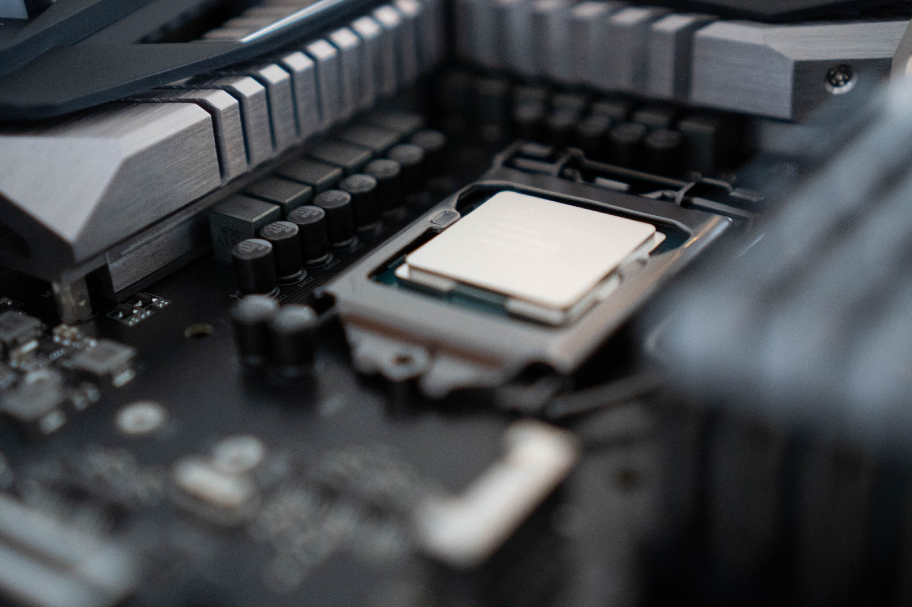

What exactly is overclocking and should you try it?
Ifyou’re looking to enhance your computer’s performance without having to spend another dollar on a hardware upgrade, you’ve hit the jackpot landing here. Overclocking is a great way to squeeze out additional performance from your existing CPU configuration without having to spend a single buck on it. Don’t know what overclocking is? I’ve got you covered. Read on to find out more about this curious concept and its brilliant applications.
1. What is overclocking?
In simple terms, overclocking is the art of tweaking your motherboard’s settings in order that your CPU performs at higher speeds than what it’s supposed to run at. In general, overclocking comes in handy if you’re using your computer for resource-intensive applications such as video editing or in high-end gaming scenarios. Sounds exciting right? Because it is. But of course, if tweaking and playing around with your system architecture is your go-to-thing, this article shall help you as well.
A word of caution: Overclocking has its risks, and don’t go around tinkering with your system unless you’re prepared to handle the consequences, which can be costly at times.
2. Which CPUs can be overclocked?
Now that you know what overclocking means, you might be curious as to which CPUs permit overclocking because not all CPU manufacturers are too happy to allow it.
If you’re an Intel fan, try looking for any CPUs whose model name ends with K. Examples of such Intel-based CPUs that support overclocking are:
- Core i9–10900K
- Core i7–10700K
- Core i5–10600K
AMD trusts its users far more than its Intel counterpart. So much so that AMD allows you to overclock almost any Ryzen processor with all of their chipsets except for A320. CRAZY RIGHT?
Golden Rule: Always remember to verify your CPU or motherboard on the manufacturer’s official website, so you can be sure if it’s unlocked for overclocking!!
You’ll also have to look for a compatible motherboard to support your CPU overclocking. Coming back to the question of Intel vs AMD Ryzen, the answer to motherboard compatibility lies below:
Intel: FIND a motherboard that features a ‘Z’ in its chipset name, such as the Z170 motherboard.
AMD: MOST of their motherboards are overclock-enabled, but don’t forget the GOLDEN RULE stated above.
3. Why should you overclock your CPU?
I’ll be honest with you here.
Overclocking your CPU boosts your computer performance for zero extra bucks. PERIOD.
Also, if you’re still not convinced, this should convince you.
Overclocking can enable any computer user to churn out anywhere from 2% to up to 20% performance boost (or EVEN MORE for a decent overclock!!).
That’s a pretty strong reason for overclocking, at least for me.
4. What exactly are you overclocking inside your CPU?
1.CPU multiplier:
CPU multiplier is a device inside your CPU that multiplies the base clock value inside your motherboard (usually 100 MHz). For example, a multiplier of 28(x100 MHz) gets you a 2.8 GHz clock speed. Now, with overclocking, you can actually increase this multiplier count keeping a close eye on your system stability throughout. Don’t forget to stress test your system after every increment as it will help determine whether your system is stable enough to handle the overclocked multiplier count.
Some of the best tools for stress testing out there are as follows:
- a. Prime95
- b. IntelBurn Test
- c. Aida64
2. CPU Voltage:
The default value of CPU Voltage is either set to 1.5V or Auto (in my case, it was set to Auto). From your BIOS, you can slowly increase this value, for example, to 1.55V or 1.6V. The increase in voltage provides more room for overclocking your CPU multiplier, and that’s exactly what we’re trying to realize. In my case, I could only yank it up to about 1.6V before my CPU temperature started spiking. Since my PC only had air cooling, I decided not to proceed further. (**sad noises**) Don’t worry, the maximal voltage limit might be different in your case. So always keep an eye on the CPU temperature throughout the overclocking process. . . . And yes, I really don’t want to torture you by making you search for the best CPU monitoring application suited for your needs😁.
So I’ve gladly attached a few such applications which you can use to monitor your CPU temperature in real-time. Here are some of the best ones out there:
- a. Core Temp
- b. Real Temp
- c. HWiNFO
5. Is overclocking safe?
Now the real question arises. IS OVERCLOCKING SAFE? The simple answer is this: It is safe, but only within certain limitations as permitted by your CPU.
When overclocking, what we’re doing is we’re incrementing the multiplier count on the CPU, which leads to more production of heat. Heat is the primary adversary of CPUs, and excess heat over extended periods of time can drastically affect the lifespan of your chip. Rule of thumb: If your CPU temperature seems to be approaching 90 degrees Celsius or such after overclocking, you really need to reset your configuration back to default as soon as possible. I MEAN IT!! Temperatures as high as that certainly won’t damage your CPU immediately but could have a huge blow on its functionality in the long run.

6. Understanding the Silicon Lottery
At this point, I’m pretty confident about your basic understanding of overclocking. But HOLD ON, there’s one last concept I want you to know about- the silicon lottery. When chip manufacturers make the CPU chips, there are slight variations in quality across the different materials, which may lead to significant differences between the performance output of two different chips of the same batch. Basically, just because you have the same CPU model as someone else doesn’t mean it will provide a similar overclocked performance output. So next time, don’t sit around pondering why your friend’s CPU fares better for the same overclocked settings as compared to your CPU (same model), or vice versa.
Takeaway
For absolute safety, I don’t recommend going above 1.6V or 1.7V. Essentially, as long as you keep your CPU temperatures under control (liquid cooling works way better than air-powered ones), overclocking shouldn’t be a problem at all. But of course, keep your dear manufacturers in mind. Most manufacturers deny any replacement on overclocked electronics and you may end up losing any warranty on your CPU or motherboard. OOPS!!
The journey ends here…………..
Hopefully, this article has helped conglomerate your understanding of overclocking more. There are risks, of course, but the performance benefits far exceed the risks, and we are all about that performance boost. 😄